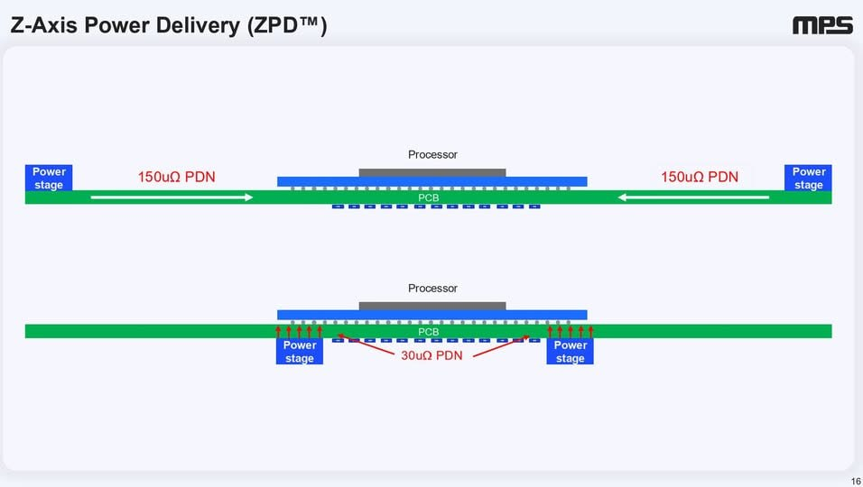

過去 26 小時共 4 則，全部是實質內容、沒有業配。前兩則是 MPS（Monolithic Power Systems，MPWR）Q3 2026 法說會重點，附一張垂直供電投影片；後兩則是 Marvell 宣布以換股方式合併 Lumentum。
記憶體缺貨幹掉 PC，但資料中心和 DDR5 PMIC 把洞補回來。2025 年中開始 ASIC 放量，主要用模組，ASP 比分離式高
- 800V 方面 MPS 的 GaN 是自己開發、比 SiC 晚，才剛送樣，Hsing 說 GaN 要出貨約 5000 萬顆才敢說可靠度到位。營收時點大概 2027 底到 2028，符合英飛凌和輝達說法
- 800V 的賣點是整體省電超過個位數百分比
- 儲存運算 yoy 3%、季減 3.8%，DDR5 PMIC 是成長主力，HDD/SSD 也健康。筆電因記憶體缺貨跟著 PC 單位數下滑約 20%。RCD 2027 放量，公司說這塊 TAM 比電源管理還大
- 通訊 yoy 134.7%，靠光模組加上年初新進的交換器電源疊加出來，1.6T 轉換量價提升
- 晶圓漲價有吸收部分跟客戶分攤，漲價對營收成長貢獻不顯著，公司說客人記性很好不要坑客戶
- 毛利率維持每季 10 到 20 bps 爬，55 到 60% 是甜蜜點
- 車用 48V 首批訂單到手，48V 和 zonal 架構是 2027 成長來源，中國案子特別多
- 機器人感測與馬達控制 2016 年 Analyst Day 就講過，到現在才出營收，2026 還是在堆 design win
- 通路庫存在 5 到 8 週區間偏低端，內部庫存以下季營收算 117 天
- 功率上去、周邊空間用完，就得做垂直供電，公司很早就有在討論這個，只是當年以為是 CPU 結果是 GPU 先遇到

#6522 圖：MPS 簡報第 16 頁「Z-Axis Power Delivery (ZPD™)」。上半是傳統做法，電源級（Power stage）放在處理器兩側，電流橫向走 PCB，供電網路阻抗（PDN）150µΩ；下半把電源級移到 PCB 背面、處理器正下方垂直供電，PDN 降到 30µΩ，約五分之一。
講解
先看大數字。MPS 10/29 公布 Q3：營收 12.02 億美元，首度單季破 10 億，季增 22.6%、年增 63.1%；GAAP 毛利率 55.4%。成長主引擎是 Enterprise Data（AI 伺服器電源，5.07 億，年增 164.6%），通訊年增 134.7%（貼文數字正確），儲存運算年增 3.0%、季減 3.8%（也與新聞稿一致）。Q4 營收指引 13.15–13.85 億美元，毛利率中值約再升 0.1 個百分點。
800V 與 GaN。輝達推的 800V 直流機櫃供電，是把機櫃匯流排電壓從 54V 拉高，同功率下電流變小、銅損變少，所以能省電。高壓轉換要用寬能隙半導體：SiC（碳化矽）耐高壓成熟，GaN（氮化鎵）切換更快、體積更小，但可靠度歷史較短。逐字稿中 Hsing 確實說 GaN 要出貨約 5000 萬顆、失效率低於 1 ppm 才算驗證，且讓客戶自己選 GaN 或 SiC；營收時點管理層講「2027 晚些、更多在 2028」。「省電超過個位數」在逐字稿表述含糊（舉了 5% 的例子），宜視為量級而非精確數字。貼文說「符合英飛凌和輝達說法」是作者自己的比對，法說會本身沒提。
記憶體相關。DDR5 PMIC 是把電源管理晶片放到記憶體模組上（DDR4 時代在主機板），每條 DIMM 都要一顆，是 MPS 儲存運算的主力。RCD（暫存時脈驅動器）是伺服器 RDIMM 上緩衝位址/指令訊號的晶片，目前由瀾起、Rambus、Renesas 主導，MPS 是新進者；管理層說 2027–28 才有營收、機會「比電源管理大」，但沒給具體 TAM 金額。筆電下滑約 20% 這個數字在逐字稿中是分析師的提問口徑，管理層只說受記憶體供給限制，沒有明確背書 20%。
定價與毛利。晶圓漲價部分自行吸收、部分轉嫁，管理層說漲價對營收成長不是重要貢獻，並說「客戶記性很長、產能緊時不坑客人」；毛利 55–60% 為甜蜜點、緩步爬升，皆與逐字稿相符。這代表 MPS 選擇以市占和長期關係優先，毛利不會因缺貨暴衝。
車用、機器人、庫存。48V 首批訂單與「48V/zonal 是 2027 成長動能」有出處。48V 取代傳統 12V 可減少線束電流與重量，zonal 架構把車內 ECU 依區域整合，都帶動電源晶片含量。機器人 2026 仍在累積 design win。通路庫存「偏低端」管理層有講，但 5–8 週與 117 天這兩個具體數字我在查到的逐字稿摘要中沒找到明確原話，可能來自問答或公司過往口徑，未能完全查證。
垂直供電（圖）。GPU 功耗衝到千瓦級、核心電壓不到 1V，電流動輒上千安培，橫向走線的微小阻抗都會造成大量壓降與發熱；把電源模組直接塞到晶片正下方（垂直供電），路徑最短、阻抗最低。這也解釋前面「ASIC 主要用模組、ASP 較高」：模組整合電感與功率級，單價高於分離式元件。投影片 150µΩ→30µΩ 是公司自己的示意數字。
Marvell將以股票交易方式收購Lumentum，將以每股1,132美元的價值合併。
講解
依 Marvell 11/2 新聞稿：全股票交易，固定換股比例每股 Lumentum 換 4.5 股 Marvell，以公告時股價計約每股 1,132 美元，較 10/28 未受影響收盤價溢價約 23.9%，隱含企業價值約 1,150 億美元。合併後 Marvell 原股東約持 67%、Lumentum 股東約 33%；Matt Murphy 續任董事長兼 CEO，Lumentum CEO Michael Hurlston 等 3 人進入董事會。公司稱有超過 10 億美元年化成本綜效、交割後第一年非 GAAP EPS 增益，預計 2028 上半年交割，需雙方股東與監管核准。
需要注意：貼文說「以每股 1,132 美元的價值合併」，但比例是固定換股，1,132 美元只是公告當下的換算值，Lumentum 股東實際拿到的價值會隨 Marvell 股價浮動。另外交割要到 2028 上半年，時間很長，期間的監管審查（尤其跨國反壟斷，含中國）、股東投票與整合風險都在新聞稿風險聲明中列出。
產業邏輯：Marvell 做光模組裡的 DSP、交換器與客製 ASIC（電的部分），Lumentum 做雷射（EML、CW 雷射）與光元件（光的部分）。AI 叢集越大，光連結越靠近運算晶片（CPO、光學電路交換），電與光必須一起設計，這筆交易就是把兩端整合。兩家先前已有合作展示光學電路交換。對既有客戶而言，可能的疑慮是其他光模組廠或 DSP 競爭者的供應關係會不會受影響。